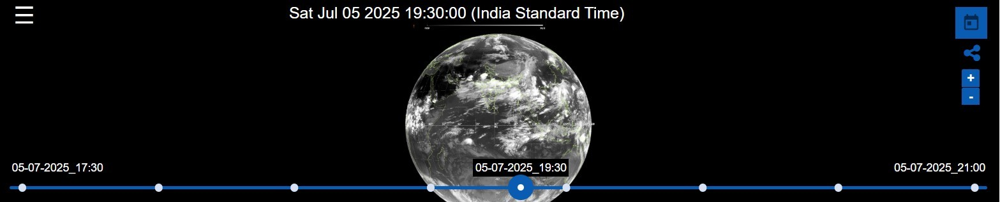

SignUp
|
Login
|
Logout
Home
Missions
Catalog
Galleries
Data Access
Reports
Atlases
Tools
Sitemap
Help
Satellite Images
RADAR
Weather
OceanState
LIVE
Sat Jul 05 2025 19:30:00 (India Standard Time)

05-07-2025_17:30
«
⏸️
8 Frames
12 Frames
05-07-2025_21:00
AntarikshMitra
Hi üëã How can I help you?
Looking for satellite data
Let's take care of that üõ∞
Please choose a topic:
üì° Latest Satellite
üåß Rainfall Map
üå™ Cyclone Alert
Send